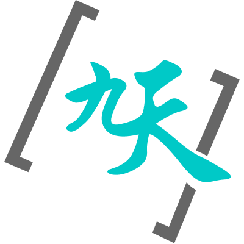

知识长期处于碎片状态
企业和个人的资料越积越多，但很多知识只停留在原文段落、聊天记录和临时总结里。比如接口规范里某条命名规则被写在文件章节，相关校验规则却在另一节，真正使用时需要重新拼接。

DeepInsight AI 知识库产业知识通常不是一篇文章里的单点结论，而是由规范、流程、口径、例外情况和历史经验共同构成。真正难的地方在于：知识分散在多份材料里，关系隐藏在章节之间，问题又常常带有业务上下文。以“中国移动集中化经分系统数据接口规范”为例，一个“接口文件怎么命名”的问题，背后就可能同时牵涉传输方式、文件命名、校验文件格式、重传序号、字段约束和接口单元关系。
企业和个人的资料越积越多，但很多知识只停留在原文段落、聊天记录和临时总结里。比如接口规范里某条命名规则被写在文件章节，相关校验规则却在另一节，真正使用时需要重新拼接。
很多结论依赖“谁引用谁、哪个规则约束哪个字段、哪个错误码对应哪类问题”。如果每次都临时检索，模型容易只看到局部片段，而看不到规范之间的链路。
一次高质量问答往往包含真实场景、推理过程和修正经验。如果这些内容不能回写知识库，下次遇到类似问题仍要从零开始，知识系统不会因为被使用而进化。
直接问大模型，依赖模型已有知识和当前上下文；基础 RAG 能把材料找回来，但仍然把大量组织工作留给问答时临场完成。LLM Wiki 更进一步：先把材料编译成可维护的知识结构，再让问答站在这张结构化知识网上进行。
| 维度 | 直接大模型问答 | 基础 RAG 产品 | DeepInsight LLM Wiki |
|---|---|---|---|
| 知识来源 | 主要依赖模型参数知识和用户临时提供的上下文，容易受记忆边界影响。 | 可以召回原文片段，但片段之间的关系通常仍需模型临场判断。 | 保留原始资料，同时沉淀原子页面、索引和语义连接，知识状态更稳定。 |
| 复杂问题 | 遇到强约束、长文档和跨章节问题时，容易凭常识补全。 | 能降低“找不到”的问题，但多片段之间仍可能遗漏条件。 | 摄取阶段提前建立“规则 - 文件 - 字段 - 错误码”的关系链，回答时更容易合并证据。 |
| 可靠性 | 回答流畅，但来源和推理链路不一定清楚。 | 能引用片段，但片段是否完整、是否冲突需要额外判断。 | 每个知识页可追溯原始来源，Lint 流程持续检查缺链、矛盾和过期信息。 |
| 持续进化 | 好答案通常停留在聊天记录里。 | 索引可以更新，但问答经验不一定自然进入知识体系。 | 高质量问答可归档、拆解、回写，让知识库随着使用持续变准。 |
整体架构可以理解为三层：底层原始资料只读，中间 LLM Wiki 负责把知识拆成可链接页面，顶层 Schema 规定页面格式、流程规则、审查标准和日志。DeepInsight 的 Agentic 架构负责调度模型、工具、权限与人工介入，让这套知识层可以服务长程任务。
例如把一份接口规范拆成“接口文件命名规则”“接口校验文件”“记录级校验错误代码”等页面，而不是只存一堆文本切片。
回答问题前先读取 index.md，再进入相关页面，沿着语义连接找到跨文件证据链。
Lint 检查页面 frontmatter、链接、摘要覆盖、事实矛盾与格式缺失，让知识库保持一致。
当一次问答解决了真实问题，系统可把完整上下文归档，再提炼成新知识页，形成越用越准的闭环。
原始资料是《集中化经分系统数据接口规范-百度地图慧眼大数据系统分册》，DeepInsight Wiki 已经把它拆成集中化经分系统、百度地图慧眼、SFTP、接口命名、校验文件、记录级错误、政企场景信息、政企场景客户信息等可连接页面。
关系图谱让系统知道：原始文件是百度地图慧眼大数据系统分册，但一个“接口怎么命名”的问题，可能同时牵涉抽取周期、重传序号、校验文件结构、接口单元与错误报告，而不是只命中文档中的某一个段落。
DeepInsight AI 知识库把企业知识与个人知识从静态文档变成可运营、可追溯、可持续生长的知识资产。它不只是把答案说得更像人，而是让每一次问答都更接近真实业务规则，并且能把纠错经验沉淀下来。
DeepInsight AI 知识库呈现的不应只是一个资料库，而是一套能解释、能追溯、能纠错、能持续吸收高质量问答的知识生产系统。它让大模型不再每次从零读文档，而是站在已经整理好的知识网络上工作。